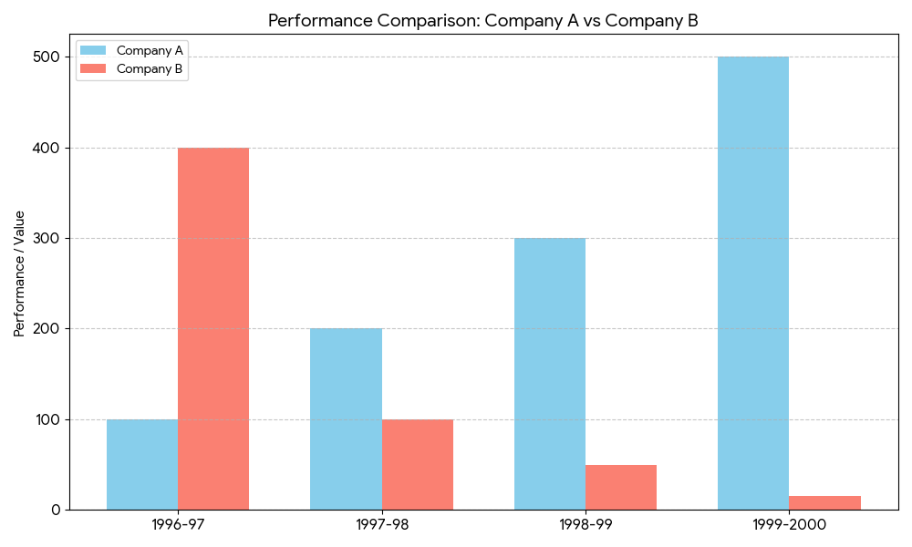
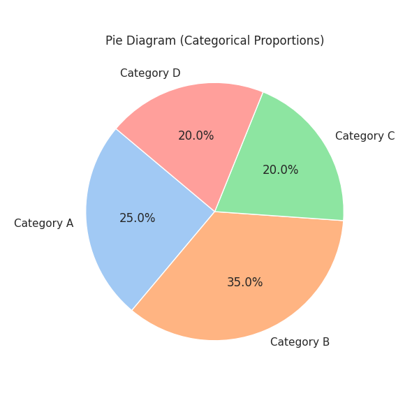
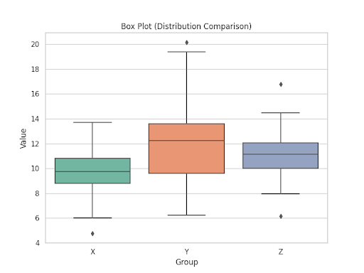
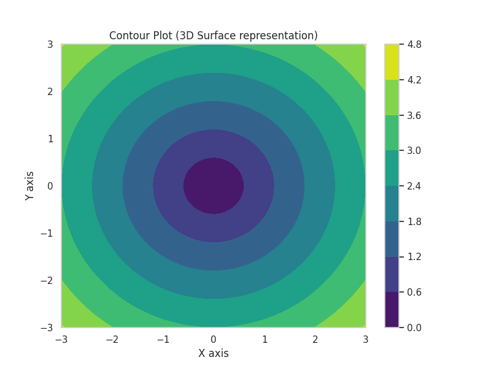
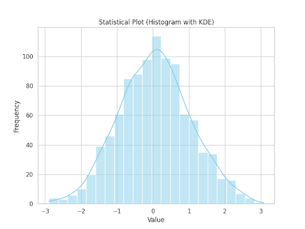

Data Visualization Catalog
A comprehensive guide to statistical diagrams for data interpretation.
Clustered Bar Diagram

This diagram places bars for different entities side-by-side, making it easy to compare specific values, such as the growth of Company A versus the decline of Company B.
Introduction: A clustered (multiple) bar diagram is the natural choice when you have two or more related series measured over the same categories and you want to compare them directly, not just see their total.
Dataset used: a value for each of two companies (A and B) recorded across the same set of time periods.
How to draw it
- Arrange the data as a table: one row per category (e.g. year) and one column per series (Company A, Company B).
- Draw the horizontal axis for the categories and the vertical axis for the values. Start the vertical axis at zero and choose one common scale that covers the largest value.
- For each category, draw one bar per series next to each other with no gap inside the cluster, and leave a gap between clusters.
- Give every series the same colour in every cluster and the same bar width.
- Add a legend, axis labels with units, and a title.
Subdivided Bar Diagram

A Subdivided Bar Diagram (also called a Stacked Bar Chart) represents the total magnitude of a category while breaking it down into its constituent parts. It is perfect for showing how different segments contribute to a whole over time.
Insight: In the 1972-1974 cost data, we can see that while "Wages" and "Polishing" remained relatively stable, "Other Costs" surged in 1974, driving the total expenditure up significantly.
Dataset used: yearly cost data for 1972, 1973 and 1974, split into cost components (Wages, Polishing, Other Costs).
How to draw it
- For each year, add the components to get the total cost: $T = \text{Wages} + \text{Polishing} + \text{Other}$.
- Scale the vertical axis from 0 to slightly above the largest total.
- Draw one bar per year with height equal to its total.
- Divide each bar into segments. Start with the first component at the base, then stack the next on top of it. The segment boundaries sit at the cumulative values (Wages, Wages + Polishing, then the total).
- Shade each component with a fixed colour across all bars, and add a legend. Only the bottom component is easy to compare across years, so label segment values where possible.
Deviation Bar Diagram

A Deviation Bar Diagram is specifically used to visualize the net difference between two related variables. By using a central baseline at zero, it clearly distinguishes between positive outcomes (surpluses) and negative outcomes (deficits).
Statistical Insight: In this trade dataset, the diagram reveals a volatile trend. While 1970-71 and 1972-73 enjoyed identical surpluses of +20, the year 1973-74 saw a massive trade deficit of -75, where imports were double the value of exports.
Dataset used: exports and imports for each year (1970-71 to 1973-74).
How to draw it
- Compute the net value for each year: $\text{Net} = \text{Exports} - \text{Imports}$.
- Draw the zero line in the middle of the axis. The vertical scale must run from the most negative to the most positive net value (here about -75 to +20).
- Draw one bar per year starting at zero. Surpluses (positive) go above the baseline, deficits (negative) go below it.
- Use two colours (for example green for surplus, red for deficit) so the sign is visible at a glance.
- Print the net value at the end of each bar.
Pie Diagram

The Pie Diagram is a circular graphic that represents data as slices of a whole. It is most effective when showing composition or proportions among a small number of categories. Mathematically, the arc length of each slice is proportional to the quantity it represents.
Introduction: Use a pie when the question is "what share of the total does each part take?" and there are only about 3 to 6 categories.
How to draw it
- List the categories with their values $x_i$ and compute the total $N = \sum x_i$.
- Convert each value to an angle: $\theta_i = \dfrac{x_i}{N} \times 360^\circ$. The angles must add up to $360^\circ$.
- Draw a circle and mark the centre. Draw a radius from the centre to the top of the circle as the starting line.
- Using a protractor, mark off each angle in turn, clockwise, usually starting with the largest category.
- Shade or label each sector with its category name and percentage.
Box Plot (Whisker Plot)

A Box Plot provides a visual summary of the central tendency and dispersion of a dataset. It displays the median, quartiles ($Q1$ and $Q3$), and whiskers that extend to show the range. Points outside the whiskers are identified as statistical outliers.
Introduction: The box plot compresses a whole dataset into five numbers, so it is ideal for comparing the spread and symmetry of several groups side by side.
How to draw it
- Sort the data and find the median, $Q_1$ (25th percentile) and $Q_3$ (75th percentile). Compute $IQR = Q_3 - Q_1$.
- Compute the fences: lower $= Q_1 - 1.5\,IQR$ and upper $= Q_3 + 1.5\,IQR$.
- Draw a box from $Q_1$ to $Q_3$ and a line inside it at the median.
- Extend whiskers from the box to the smallest and largest data values that lie within the fences.
- Plot every point beyond the fences individually as an outlier (dot or star).
Contour Plot

Contour Plots are used to visualize a three-dimensional surface on a two-dimensional plane. By connecting points of equal value with lines (contours), it reveals the topology of the data, such as peaks, valleys, and gradients in a continuous field.
Introduction: Think of a topographic map: each line joins locations of the same height. In statistics and machine learning the same idea is used for bivariate densities and for loss surfaces $L(w_1, w_2)$.
How to draw it
- Start with a function or dataset giving a value $z = f(x, y)$ at every point of a grid over the $x$-$y$ plane.
- Choose a set of levels $c_1 < c_2 < \dots < c_k$, usually evenly spaced.
- For each level $c$, find the points where $f(x, y) = c$. Between neighbouring grid points, use linear interpolation to locate where the value crosses $c$.
- Join these points into smooth closed or open curves, one set per level.
- Label the levels or fill between them with a colour gradient. Lines close together mean a steep slope, lines far apart mean a flat region.
Histogram with KDE

This dual-layer plot combines a Histogram (binned frequency counts) with a Kernel Density Estimate (KDE) curve. While the bars show exact counts, the KDE provides a smoothed estimate of the probability density function, making it easier to identify the distribution's skewness and modality.
Introduction: A histogram shows how a continuous variable is distributed; the KDE is a smooth, non-parametric curve drawn on top so the shape does not depend only on the choice of bins.
How to draw it
- Find the range of the data and choose the number of bins $k$, for example Sturges' rule $k = 1 + \log_2 n$. Divide the range into $k$ classes of equal width.
- Count the observations in each class. To overlay a density, scale the bar heights as density: $\dfrac{\text{count}}{n \cdot \text{bin width}}$, so the total area is 1.
- Draw adjacent bars with no gaps, since the variable is continuous.
- Compute the KDE on a fine grid of $x$ values: $\hat f(x) = \dfrac{1}{nh}\sum_{i=1}^{n} K\!\left(\dfrac{x - x_i}{h}\right)$, with a Gaussian kernel $K$ and bandwidth $h$.
- Plot $\hat f(x)$ as a smooth line over the bars. A small $h$ gives a wiggly curve, and a large $h$ over-smooths.
Ogive Curve

An Ogive (or Cumulative Frequency Polygon) is used to determine the number of data points below or above a specific value. It is constructed by plotting cumulative frequency on the y-axis against class boundaries on the x-axis.
Key Use: Finding the Median and Quartiles graphically by identifying the x-values corresponding to 50% and 25%/75% of the total frequency.
Introduction: The ogive is the graph of the empirical cumulative distribution: for any value $x$, it tells you how many observations are at or below $x$.
Dataset used: a grouped frequency distribution (class intervals with their frequencies).
How to draw it
- Write the class intervals and frequencies $f_i$ in a table.
- Add a column of cumulative frequencies, $F_i = f_1 + f_2 + \dots + f_i$. The last value equals $n$.
- For a "less than" ogive, pair each cumulative frequency with the upper class boundary. Add the starting point (lowest lower boundary, 0).
- Plot these points with class boundaries on the x-axis and cumulative frequency on the y-axis, and join them with straight lines or a smooth curve. It always rises and never falls.
- To read the median, go to $n/2$ on the y-axis, draw across to the curve and down to the x-axis. Repeat with $n/4$ and $3n/4$ for $Q_1$ and $Q_3$.
Lorenz Curve

The Lorenz Curve is a graphical representation of the distribution of income or wealth. It plots the cumulative percentage of total income against the cumulative percentage of the population.
Interpretation: The "Line of Equality" (a 45° diagonal) represents perfect distribution. The area between this line and the Lorenz curve is used to calculate the Gini Coefficient.
Introduction: The further the curve bows below the diagonal, the more unequal the distribution. It is widely used in economics, and in data science to compare how concentrated a quantity is across a population.
How to draw it
- Sort the units (people, households, groups) in ascending order of income.
- Compute the cumulative percentage of the population and the cumulative percentage of total income for each step.
- Draw a square graph with both axes running from 0% to 100%. Draw the diagonal from (0, 0) to (100, 100) as the line of equality.
- Plot the points (cumulative % population, cumulative % income) and join them, starting at (0, 0) and ending at (100, 100). The curve lies below the diagonal.
- Shade the area $A$ between the diagonal and the curve. If $B$ is the area under the curve, the Gini coefficient is $G = \dfrac{A}{A + B} = 1 - 2B$.